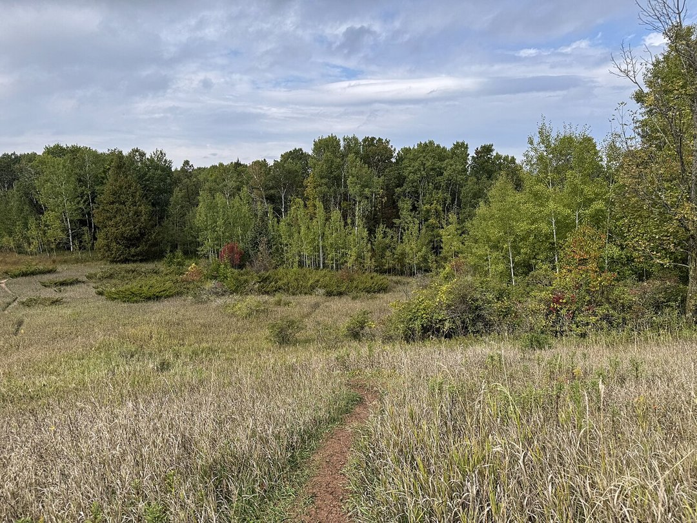

📷 사진 1 자리

▲ 늦가을 풀숲 사이 산길 · 사진: Z3lvs / CC0 / 위키미디어 공용
단풍 산행이나 캠핑을 다녀오고 일주일쯤 지나 열이 오른다면 감기만 의심하고 넘기기 쉬워요. 이맘때는 털진드기 유충이 옮기는 쯔쯔가무시증 환자가 1년 중 가장 많이 나오는 시기예요. 몸 어디를 봐야 하고 언제 병원에 가야 하는지가 핵심이에요.
감기와 다른 점
시작은 몸살과 비슷해요. 열이 나고 근육이 쑤셔요. 며칠 지나면 몸에 붉은 발진이 올라오기도 해요.
감기와 가르는 단서는 물린 자리의 검은 딱지(가피)예요. 털진드기 유충은 0.3mm 이하라 물리는 순간에는 거의 모르고 나중에 딱지를 보고서야 알아채는 경우가 많아요. 샤워할 때 살이 접히거나 옷이 조이는 곳까지 꼼꼼히 보세요.
| 시점 | 나타나는 것 |
|---|---|
| 물린 뒤 1~3주(대개 열흘 안팎) | 발열, 오한, 근육통 |
| 며칠 뒤 | 몸통 발진, 림프절 부음 |
| 물린 자리 | 검은 딱지(가피) |
치료는 항생제로 해요. 질병관리청은 초기에 치료하면 비교적 쉽게 회복된다고 안내해요. SBS 보도에 따르면 치료가 늦어지면 폐렴이나 급성 심부전 같은 합병증이 생길 수 있어요.
왜 11월에 몰리나
질병관리청 집계로 국내 환자는 해마다 3,000~6,000명이에요. 털진드기 유충이 활발한 10~11월에 몰리고 그중 11월 한 달에만 절반 이상이 나와요.
지역 보건소 자료를 보면 쏠림이 더 뚜렷해요. 청주시보건소 집계에서 11월 신고 비중은 2023년 64.4%, 2024년 76.5%, 2025년 85.0%로 해마다 올라갔어요. 환자는 50대 이상에서 많아요.
다녀온 뒤 할 일
야외에서는 긴소매와 긴바지를 입는 게 기본이에요. 질병관리청은 모자와 목수건, 양말, 장화까지 챙기라고 권해요. 집에 오면 옷을 털어 바로 세탁하고 샤워하면서 몸에 물린 자국이 없는지 봐 주세요.
야외 활동 뒤 열흘 안에 열이나 발진이 생기면 바로 병원이나 보건소에 가세요. 검은 딱지가 없어도 증상이 맞으면 진료를 받는 편이 안전해요.
쯔쯔가무시증은 증상이 1~3주 늦게 와서 본인도 산에 다녀온 일을 잊고 감기약부터 먹기 쉬워요. 그래서 진료실에서 "언제, 어디로 야외 활동을 다녀왔는지"를 먼저 말하는 게 가장 빠른 진단 단서가 돼요. 검은 딱지를 찾았다면 사진을 찍어 두는 것도 도움이 돼요.
텃밭 정리나 늦가을 산행으로 풀숲에 들어갈 일이 남았다면 이달 말까지는 같은 수칙을 이어 가세요.
함께 보면 좋은 이슈